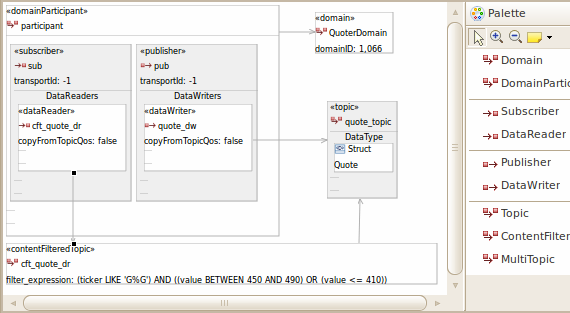

OpenDDS Model Capture is done using the
Eclipse plug-in tools.
The basic steps to capturing a model are:
These steps are outlined below.
This outline is not sufficient for using the SDK.
The OpenDDS Modeling SDK installation includes additions to the
Eclipse help system that provides details on working with an OpenDDS model.
See Help > Help Contents > OpenDDS Modeling SDK Guide.
Main Diagram
The main diagram provides the structure that will hold all
of the other diagrams that will be used in the model. Files associated with
the main diagram are the XMI diagram file,
<model>.opendds_diagram, and a XMI file
of the semantic model,
<model>.opendds. The file <model>.opendds
is what is used to generate source code.
Start capturing a model by creating a new main OpenDDS Diagram:
This will open a package diagram. From this diagram all
of the other diagrams that will be used in the model will
be created.
Package Diagrams
Package diagrams are the main entry point into capturing
a model. They allow the developer to specify any package
structures required for the project as well as defining
any local or referenced DCPS models, data definitions,
and QoS policies. Once terminal (non-package) elements
have been captured on the diagram, sub-diagrams can
be opened from them to edit the internal structure of
those elements. Those diagrams are described below.
DCPS middleware diagrams capture the DDS Entities
that will be used by the model. This includes Domain,
DomainParticipant, Publisher, Subscriber, DataWriter,
DataReader, Topic, ContentFilteredTopic, and MultiTopic
Entities. These elements and their relationships define
the DDS service that will be generated into a linkable
library and made available to any linking application.

Data Definition
Data definition diagrams capture the data types that will be
transported between publications and subscriptions.
This is a simple graphical representation
of the data structures that will be written and read
from the DDS service. Only data types that have been
defined in a model can be used by code generated from
a model. These types may be included in a model or
referenced from another model. This allows data types
to be defined in a separate, reusable, model that is
then linked by many other DCPS models.
QoS Policy diagrams allow commonly used policy values to
be captured and named. This allows a project to share
the same policy values by name, ensuring consistency
between all uses of those policy values.
Model Libraries
The OpenDDS Modeling SDK supports model libraries, which are
packages of QoS policy, data types, or DCPS domain entities, whose
elements can be used by other model libraries. A library in one model file
can reference elements from a library in the same file or another file.
Through the use of modeling libraries, reuse and concurrent
development of different portions of a model is feasible.
Libraries can optionally be placed in nested UML packages. Through
the use of libraries and packages, a large complicated model becomes
more manageable.
Validation
Validations can be performed at the model level to find semantic
problems that are not easily detectable in the code. For example,
during validation of a DataLib a check is made that the size of
Arrays is greater than 0. As another example, during validation of a DcpsLib,
a check is made that a DataWriter is associated with a Topic. Resolving validations
at the model level helps minimize the number of cycles of modeling > code generation
> testing.